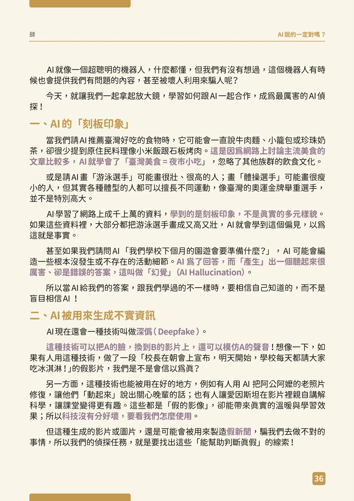
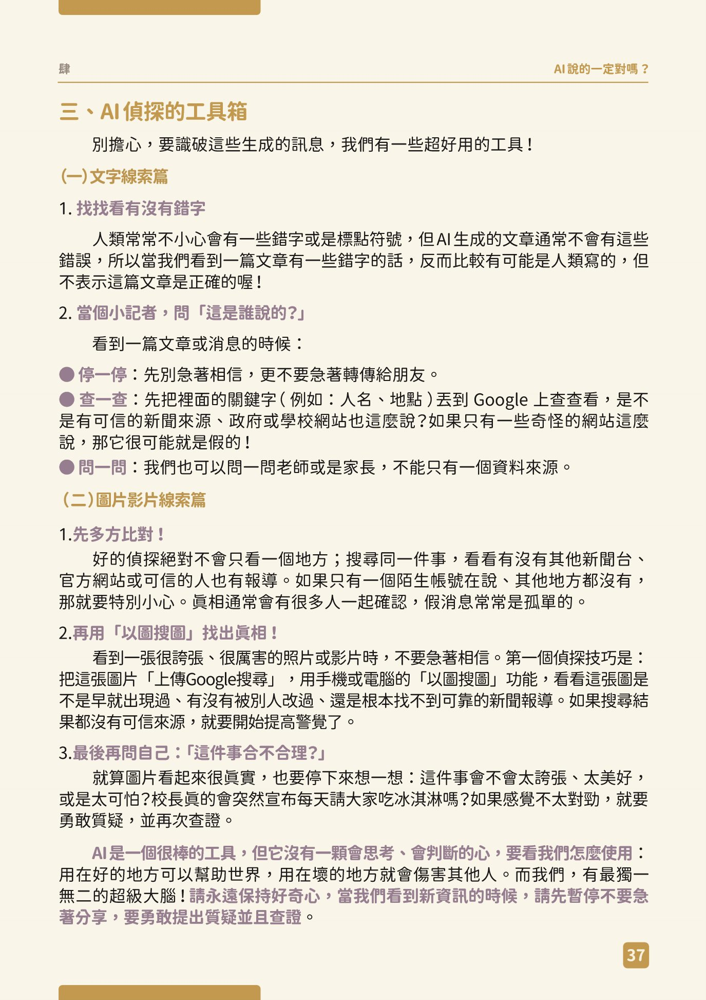
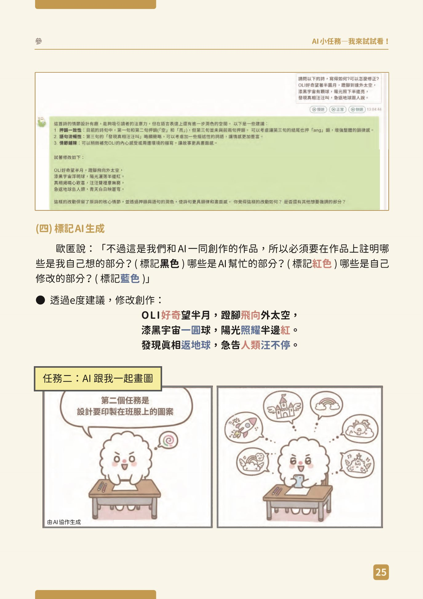

老師：對話紀錄管理
用老師的 Google 帳號登入。① 匯入「整理對話紀錄.py」產生的 aiHistory.json ② 替每位學生標記「值得寫的對話」 ③ 檢查學生挑的內容、列印每人的歷程紀錄 PDF（最多 2 頁）。
檢查看：當個 AI 偵探
請 AI 畫「游泳選手」可能畫很壯、很高的人……AI 學到的是刻板印象，不是真實的多元樣貌。

當 AI 給我們的答案，跟我們學過的不一樣時，要相信自己知道的，而不是盲目相信 AI！

拿出你的圖和文字，一項一項檢查（檢查過就勾）
影片：因材網 e度 官方「通用型學習夥伴－一般模式」（19 秒）。查事實用一般模式。
手冊的偵探工具箱（肆 p.37）：停一停，先別急著相信；查一查，看課本或可信的網站；問一問，問老師或家人。例：卡片寫「明年是羊年」，就去查：2027 年（民國 116 年）是丁未羊年，農曆新年在 2027 年 2 月 6 日。
要標記：黑色、紅色、藍色
必須要在作品上註明哪些是我自己想的部分？（標記黑色）哪些是 AI 幫忙的部分？（標記紅色）哪些是自己修改的部分？（標記藍色）

練習：幫思思的詩標顏色
思思寫了詩，請 e度 給建議，再自己修改（手冊 參 p.23–25）。點字詞可以換顏色：黑 → 紅 → 藍。標好後按「對答案」。
你的卡片，哪些是誰做的？這一步不用在學習單寫。老師會帶你在 Word 裡用黑、紅、藍標出來：黑是你自己想的、紅是 AI 幫忙的、藍是你自己修改的。先把上面的詩標對，就會了。
「AI 協作歷程紀錄」怎麼寫
評審最看重這份紀錄（最多 2 頁）。老師已經把你和 e度 說過的話整理好，放在下一步。你要從裡面挑 4～5 輪（一輪＝你點選的一串訊息）「有發現問題、有追問、改完更像你家」的對話，不是挑最漂亮的圖。
一輪是怎麼做出來的？
第 4 步・自己點選 挑出一串訊息
在對話裡用手點你要的那幾句（你說的話、e度 的回答都可以，選好幾句），按「保存這串對話」，就是一輪。挑 4～5 輪。
第 5 步・自己讀 看你保存的那一輪
下一步會用對話畫面把你保存的訊息放出來，一次只寫一輪。
你自己寫 我發現的問題，和我怎麼追問或修正
哪裡、為什麼、你怎麼確認、後來怎麼改。
你自己寫 最終採用的理由
留下什麼、不用什麼、為什麼。沒有選項可以勾，每個人都用自己的話。
評審想看什麼？（簡章五，總分 100）
批判檢視、提問策略與人工修正 30%（同分先比這項）
你有沒有發現 e度 的問題、怎麼追問、怎麼自己改。歷程紀錄主要就在拿這 30 分。
創意、原創性與生活連結 30%
最後留下來的字句，是不是只有你家才有的事。
AI 與數位工具整合 20%
用對精靈、一般模式、Canva，各做各的事。
數位倫理與權責揭露 20%
誰做的、誰改的講清楚；提問裡沒有個資。
所以每一輪都要有：我發現了什麼、我怎麼追問或改、我為什麼採用或不用，而且說得具體。
怎麼挑？
- 挑有故事的：你發現 e度 說錯、太空泛、不像你家，然後追問或自己改的那一輪。
- 每一輪都要有「我」：只是照著 e度 的話做，沒有判斷，評審看不到你的想法。選的訊息要同時有你的話和 e度 的話。
- 排優先順序：最能代表你的放第 1（在第 4 步右邊用 ▲▼ 調）。2 頁放不下時，從最後面開始拿掉。
- 看看右邊：老師標了幾個「值得寫的對話」，那是提醒，不一定要挑，也可以挑別的。
AI 的回答摘要，和我發現的問題：AI 給了三個開頭。第二個寫「大家都很緊張」，但我那天其實很期待，不像我。
我的追問或修正：我告訴它「我那天很期待，不緊張」，請它只給開頭的方向，不要幫我寫。
最終採用的理由：第三個方向「先寫墨汁的味道」很像我的感覺，所以我用它，其他的我自己寫。
怎麼把「我和 AI 一起改」寫清楚？（句型範例）
紅色是 AI 給的，藍色是你自己改的，黑色是你自己想的。把內容換成你自己的事，不要整句照抄。
看自己的對話，點選訊息，保存 4～5 輪
這是你和 e度 說過的全部話，從上往下看。右邊有老師標的「值得寫的對話」，點一下就跳過去。看到有發現問題、有追問、有自己修改的地方，用手點那幾句話（你說的、e度 說的都可以，想選幾句就選幾句），再按「保存這串對話」，這就是一輪。再選下一輪，共 4～5 輪。選好之後按下面的「下一步」，去寫每一輪的理由。
我挑的對話：一輪一輪寫「最終採用的理由」
上面是你保存的那一輪對話，讀一讀，再寫下面兩格。寫完這一輪才能換下一輪。沒有選項可以勾，也不會幫你寫好，全部用你自己的話。
作品說明書：直接在這裡打
不用另外開文件了。這一頁的 5 個部分，就是比賽「作品說明書」表格的 5 欄，你打在這裡，系統會每 8 秒自動儲存；老師最後會把你打的內容整理成比賽格式的 Word。每一欄下面有「評審看什麼」，還有老師根據你的對話紀錄給的提醒，可以點「看那段對話」回去看。
1創作理念
請說明你想透過這個作品告訴大家什麼想法或故事？這個作品結合了你什麼真實的生活經驗？
- 為什麼選這一刻？
- 這件事改變了我什麼？
2手冊對應章節（可以複選）
請勾選你的作法可以對應到《中小學生成式 AI 之學習應用手冊—國小生聰明用 AI》的哪一個章節，並說明對應部分。點「看手冊」會打開那一章的手冊頁面，幫你回想。
3使用教育型 AI 過程
勾「沒有」通常代表沒有仔細檢查。回去看看你挑的歷程紀錄。
4查證揭露
請說明並記錄作品的哪些部分使用教育型 AI、哪些部分是自己創作的？是否完整標示作品經教育型 AI 協助生成？
5學習反思
寫好之後什麼都不用交。內容已經自動存到雲端；老師會匯出成比賽格式的 Word。想改隨時回來改，到交件前都可以。
今天的成果
今天完成的
- 檢查了
- 歷程紀錄
- 保存好
- 說明書
- 作品說明書 5 個部分打好，已自動儲存
回家任務
1. 確定卡片 PDF 存好、能打開。
2. 作品授權同意書（第 3 節請你回家簽的）還沒交的，10/22 一定要帶來。